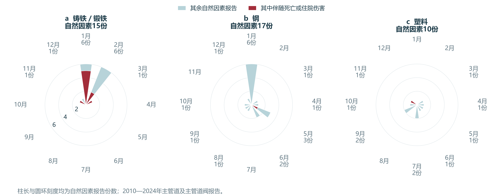
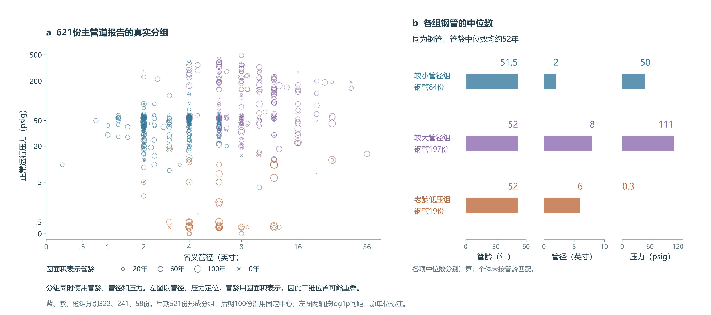

第一章比较了部件、材料和地点的事故表现。企业发现设施损伤、准备安排处置时，还需要知道谁可能受到影响、人员正在做什么，以及现场设施和环境与哪些历史事故相似。本章用分组统计、事故经过和物理聚类回答这些问题。伤亡统一指整起报告记录至少一人死亡或因伤住院至少一晚；它不自动表示发现损伤之后才发生的伤害。
2.1 部件、场地与受伤人员
进户管连接用户，但伤者也可能是在现场工作的人员。为确定人员保护需要覆盖谁，我们在公共、私人地点分别比较进户管和主管道，并区分公众与工作人员等。工作人员等包括运营商员工、为其工作的承包商人员、其他应急响应者，以及通行权内与运营商无关的工作者。这些身份说明谁受伤，实际任务仍需从事故经过确认。
公共地点较多涉及工作人员，私人地点较多涉及公众


公共地点的两类管道都较多涉及工作人员等。进户管45份报告中，14份涉及工作人员等、7份涉及公众；同一报告可以同时涉及两类人员。私人地点则较多涉及公众，主管道和进户管均如此。保护对象因此不能只由管道名称推断。
材料构成也会影响场地比较，所以我们继续核对2021年底及以前收到的塑料主管道报告。私人地点涉及公众伤亡的比例为12／35，公共地点为9／136，场地差别仍可观察。类别聚类提供了比较入口，随后扩展到同材料、同部件的全部记录。这里的地点是报告场地分类，具体受伤位置由原案确认。场地与人员计数 · 同材料对照
公众和工作人员需要核对的经过也不同。20110152号公共进户管报告记载，维修队锯切已漏气的管段时，燃气点燃，一名队员面部烧伤。该案受伤者是维修人员，人员保护因而需要结合现场任务安排。复核需同时记录部件、场地、实际在场人员和任务。原案时序
2.2 开挖、运行与维修中的伤害过程
同样是主管道损伤，初始施工和后续维修可能涉及不同人员。三材料693份报告的主要原因统计显示，钢管的开挖报告最多，伤亡报告却更多归为错误操作；塑料管的开挖伤亡占其伤亡报告的一半。解释这两种情形，需要核对开挖后的燃气状态，以及运行维修时的实际任务。主要原因是调查后填写的分类，完整经过由事故叙述补充。全部原因计数
钢管与塑料管分别有196份和195份开挖报告，数量接近，伤亡却为6份和35份。下图保留材料身份，依次按燃气是否点燃、是否伴随伤亡分类。流带宽度表示报告数量。
塑料开挖报告更常记录燃气点燃，伤亡也多见于点燃组


塑料管进入点燃支路的份额较大。已经记录点燃的报告中，钢管和塑料管的伤亡比例接近，分别为6／20和32／100。为看清点燃份额不同对伤亡比较的影响，我们保留各材料在点燃、未点燃组内的伤亡比例，再按两种材料合并后的同一份额加权。重新汇总后，伤亡比例差由14.9缩至2.8个百分点。点燃构成解释了本批钢塑伤亡差别的一部分，具体点燃原因需结合设施和作业经过理解。点燃与后果计数 · 共同构成计算
点燃差别还包含设施规格的差别。为减少直接混合不同压力设施造成的影响，我们保留正常运行表压高于1、不超过60 psig的共同范围。计算时保留各材料每个管径档的点燃比例，再按合并后的同一管径份额加权，检查管径构成不同能解释多少点燃差别。psig是相对大气压的压力单位。
按共同管径构成比较后，钢与塑料的点燃比例差缩小


塑料管的小管径份额较大，而两种材料的小管径档都较常记录点燃。统一管径构成后，点燃比例差由36.8缩至21.2个百分点，差别缩小但没有消失。比较同类事故时，需要同时核对材料、管径和正常压力，再查阅相应现场经过。管径与点燃对照
伤害还可能发生在损伤已经被发现之后。35份塑料开挖伤亡报告中，六份明确记载第三方先损伤管道，运营商人员随后在停气、旁通或修漏中受伤。例如20190127号报告中，运营商10:38接到断管通知，10:55到场，11:07在夹断停气时发生点燃，三名装配工烧伤，其中一人住院。这些原案将最初损伤与后续任务连接起来，说明处置人员的任务和位置需要单独记录。逐案顺序与未知项
未点燃的伤害涉及另外的作业过程。钢管22份错误操作伤亡报告均涉及员工或承包商，其中五份未记录点燃，原案记有压力释放、堵头或碎屑伤人。部分案件的所报材料还是原钢管，而受伤发生在连接塑料替换段时。复核需分别记录最初损伤者、后来处置者、实际操作的组件、燃气状态及伤者位置。
2.3 材料背后的设施条件与环境因素
材料名称也包含不了周围环境。在53份铁管报告中，自然因素是数量最多的主要原因，15份都发生于11月至次年3月。下面的极坐标图保留月份的循环关系，柱长表示报告数，深红部分表示其中伴随伤亡的报告。
铁管自然因素报告全部发生于11月至3月



为核对冬季线索，我们再比较同材料的全部季节报告。铁管冬季37份中有15份归为自然因素，其余月份16份中没有自然因素报告；钢管相应比例接近，分别为8／144和9／203。冬季铁管因而值得重点复核自然因素。这里比较的是事故报告内部的原因构成。同材料季节对照
原案补充了季节背后的具体经过。20140014号记录了实测冻土，并推测冻胀参与断管；20150011号记载事后开挖发现管道压在旧砖基础上，将裂缝归于土壤沉降。自然因素组和其他原因组都包含老设施，已知管龄的中位数分别为83年和97年。复核同类铁管时，需分别查看设施年龄、当地冻土、沉降和管道支撑记录。
冬季的原因线索与人员后果需要分开判断。铁管冬季伤亡为16／37，其余月为6／16，样本不足以确定稳定差异。固定模型加入冬季与材料交互后，自然因素识别略有改善，伤亡排序却没有在时间和运营商分组检验中一致改善。因此，本研究将季节保留为铁管原因复核依据，不纳入默认伤亡判别输入。季节模型与分期口径
同种材料的设施条件也不相同。我们按管龄、管径和正常压力，用K-means概括621份完整记录的物理组合，材料与伤亡都没有参加分组。算法反复执行两步：每份报告归入条件最接近的组中心，再按组内平均条件更新中心，直到分组稳定。每个空心圆都来自一份真实报告，位置显示管径和压力，面积补充管龄；二维位置相同的记录仍可能因管龄不同而分到不同组。
三组钢管的管龄中位数接近，管径与压力仍不同



图中三组钢管的管龄中位数都约52年，管径和压力却相差很大。选择历史事故作参照时，同材料、相近管龄的设施仍需进一步比较管径和正常压力。三组用于描述这些设施组合，由早期521份确定，后期100份按固定中心归类。真实分组与原单位画像
本章分别检查了部件与场地、点燃与作业过程，以及设施规格和环境。第三章据此检验材料、场地等类别能增加多少伤亡判别信息，管径、正常压力及管龄各自提供什么信息，聚类组别能否概括原始物理量。点燃、最终原因和原案中的任务顺序用于复盘解释。模型结局统一为历史事故报告的整起伤亡后果；企业发现损伤后新增的伤害，还需要逐人受伤时刻才能识别。结局与输入时点 · 资料与计算说明
资料与计算说明
分析单位是一份事故报告，伤亡标记表示整起事故有死亡或住院至少一晚的伤害；报告数不等于伤者人数。逐份核对五类人员人数之和与总死亡、住院人数相同。公众和工作人员等的报告标记可以重叠。业务判断时点为运营商首次获知设施损伤或泄漏，但当前报告没有逐人受伤时刻，故所有分组和模型结局均属于整报告回顾性分析。PHMSA填报说明 · 字段及可知时点
| 对照范围 | 报告数与用途 |
|---|---|
| 锁定全库 | 1,550份、369份伤亡，用于字段、人员定义和时间覆盖核对 |
| 原始部件为MAIN或SERVICE | 967份、174个运营商，用于部件与场地比较；不把阀门并入这两种部件 |
| 发生年2010—2024、MAIN或MAIN VALVE、钢／塑料／铸锻铁 | 693份、141份伤亡、141个运营商，用于材料原因、季节和第三章物理专题 |
| 上述范围内钢塑开挖 | 391份，其中钢196、塑料195；共同正常压力范围为287份 |
| 三项物理资料完整 | 621份、125份伤亡；未插补安装年未知的70份和主管阀门管径空白的2份 |
上述比较均以已报告事故为研究对象。没有按季节或设施条件匹配的在用管网暴露量，也没有未发生事故的设施对照，不能估计全网事故发生率或每次维修的伤害概率。
部件、场地与人员
公共与私人地点分别比较MAIN和SERVICE，报告公众、工作人员等及两类重叠的计数。工作人员等是EMP、CONTR、ER、WORKER的并集，不简称为员工。公共进户管与主管道的整报告伤亡比例差为26.3个百分点，私人地点为−1.1个百分点；两个地点差值相减为27.3个百分点。既有分析按全部174个运营商共同重抽样5,000次，seed=202611061，95%探索性百分位区间为3.6至51.2个百分点。公共地点观察到的工作人员贡献较大，但“工作人员贡献减公众贡献”的区间跨零，不将观察排序写成已确立的总体排序。既有共同重抽样结果
材料核对限定为2021年及以前收到的全部塑料MAIN记录：私人公众伤亡12／35，公共9／136。原类别聚类用于发现比较入口，正文对照没有只挑选某一组成员。类别K-means按部件、材料、地点、地区等级独热编码，统一除以√8使四字段等权；早期1,286份形成中心，后期264份分配到固定中心。候选2—8组，每组至少65份早期报告，按早期平均轮廓系数选出8组，n_init=50、max_iter=500、seed=20261107。伤亡不参加编码、选组或拟合。实际联合属性与逐项众数分开，不能把组内典型属性拼成每份记录都满足的条件。场地是释放设施所在地点的报告分类，不是伤者室内外位置；这些对照也不识别场地对伤害的因果效应。原逐份类别分组与固定参数
开挖、规格构成与原案时序
391份钢塑开挖报告按材料、整报告点燃标记和整报告伤亡交叉计数。Sankey是字段构成图，不表示每份报告均已核实点燃先于伤害。共同点燃构成采用合并样本的120／391点燃、271／391未点燃份额，再分别乘各材料在两个状态中的伤亡比例后求和。塑料减钢的原始伤亡比例差为14.9个百分点，共同构成差为2.8个百分点。这是构成重算，既未建立点燃的因果中介模型，也未估计更换材料或控制点火的干预效果。物理原理和具体伤害机制须另由过程证据支持，算法不补出原案没有记载的动作。复算表
规格对照保留正常表压1＜pressure≤60 psig，共287份，钢101、塑料186。名义管径分为≤2、＞2且≤4、＞4英寸，合并权重固定为83／287、89／287、115／287。按各材料各档点燃比例重算后，点燃差由36.8缩至21.2个百分点。既有分析在88个运营商内保留同一抽样权重，重复10,000次，seed=5021108；三档全部抽样均有有效单元，差值95%探索区间为11.6至31.7个百分点。原四档方案有486次空单元抽样，保留为审计记录，不用其略不同结果替换三档正文。重加权没有逐条匹配压力，也不能消除未测量的作业和现场差别。三档原计数 · 核对后的既有区间
原案机制沿用已完成的57份审读：塑料开挖伤亡35份、钢管错误操作伤亡22份，其中55份有可用事故经过；另两份分别缺所引用附件、仅有补报说明。明确连接第三方先损伤与运营商后续作业伤害的六例，与仅有抢修场景的两例分开。既有109条引句已逐条匹配原始TXT，本轮另核对12份代表性时序及其12条支持原句。它们用于确认“谁在什么任务中受伤”，不将员工身份、最终原因或未知顺序自动编码成作业阶段。完整既有审读 · 本轮时序与未知项
冬季铁管的两种结局
冬季固定为11月至次年3月，以LOCAL_DATETIME的发生月份定义；不搜索有利月份边界。自然因素与整报告伤亡分别计算，不先限定15份自然因素再推断全部铁管。铁管冬季自然因素15／37、其余月0／16；伤亡为16／37与6／16。铁管自然因素15份来自12个运营商，逐个去除运营商后构成差仍为37.1—45.5个百分点。伤亡差5.7个百分点的运营商重抽样95%区间为−27.7至38.0个百分点。P320采用2,000次共同重抽样、seed=320；Wilson区间仅作为独立报告假设下的参考。所有区间为探索性，未作多重比较校正。
P320固定L2逻辑回归比较基础信息、加入冬季、再加入冬季×材料。基础信息为材料、发生年份、地点和MAIN／MAIN VALVE；C=1、solver=lbfgs、max_iter=2,000、tol=1e−8、无类别加权、seed=320。发生年只在训练数据标准化，地点字典也只在训练数据形成。五折GroupKFold以运营商分组、shuffle=True、random_state=320，三种输入及两种结局使用相同折；没有按效果调参。下表复用已完成结果，log loss越低越好，AP越高越好。
| 输入 | 自然因素：运营商分组 log loss／AP | 自然因素：后期 log loss／AP | 伤亡：运营商分组 log loss／AP | 伤亡：后期 log loss／AP |
|---|---|---|---|---|
| 基础 | 0.2079／0.2629 | 0.1854／0.2499 | 0.4896／0.3004 | 0.3894／0.2781 |
| 加冬季 | 0.2080／0.2859 | 0.1846／0.2487 | 0.4900／0.3009 | 0.3887／0.3052 |
| 加冬季×材料 | 0.2016／0.2865 | 0.1829／0.2515 | 0.4927／0.2957 | 0.3885／0.3205 |
这里的后期按发生年切分，2010—2021年586份训练，2022—2024年107份检验，后期只有5份自然因素、15份伤亡、6份铁管；52个后期运营商中44个在训练期出现。它不同于第三章按收件年划分的581／112份，也不同于原proposal全库1,286／264份。季节对自然因素识别有小幅增量，伤亡排序却未同时通过时期和运营商分组检验。因此本轮决定保留冬季铁管的原因复核线索，不纳入默认伤亡评分。零自然因素的非冬季16份不表示该季节不会发生自然因素事故。模型逐份结果与参数 · 两种分期核对
物理聚类与第三章交接
管龄为发生年减安装年，接受有限且非负值；管径须大于零，正常压力非负，明确零值保留。管径和压力先取log1p，再与管龄一起按早期均值、标准差标准化。按收件年分出早期521份与后期100份；仅在早期比较k=2—8，KMeans采用k-means++、n_init=50、max_iter=500、algorithm=lloyd、seed=20261109，以平均轮廓系数最大者为准、同分取较少组。三组0.3293与四组0.3239接近，三组只是本次便于描述的选择，不是唯一自然分类。
材料、原因和伤亡不参加物理分组。后期只分配到冻结中心，本轮用原转换和中心逐份重建621份标签，全部与保存结果一致。三组全期计数322、241、58，钢管各组管龄中位数51.5、52、52年，管径与压力中位数明显不同。图的坐标是原物理量及原单位刻度，不是PCA分量；管龄为圆面积，重叠点不代表独立重复测量。复核画像 · 原冻结方案
第三章已完成同记录的信息比较，按早期规则采用管径与正常压力；类别、管龄和聚类保留解释用途，聚类没有取代连续量。窗口、缺失处理、最终参数、校准和错漏均以第三章结果为准，不由第二章的构成差或个案决定评分权重。模型输出仍是已报告事故中的历史伤亡判别；未建立发现损伤后的阶段结局或保护强度标签。已完成的信息采用决定 · 九条因素的证据与去向
聚类的实际分组与计算过程
部件、材料、地点和地区等级的类别聚类用于定位相似事故。下图保存实际归组与计算过程，正文的场地比较扩展到同部件、同材料的全部报告。
按部件、材料、地点与地区等级形成八组事故


管龄、管径和正常运行压力参加物理聚类。图中同时显示实际三维输入、选组依据和固定中心归类；正文二维点图则以原单位说明设施条件。
管龄、管径与正常压力的实际分组过程